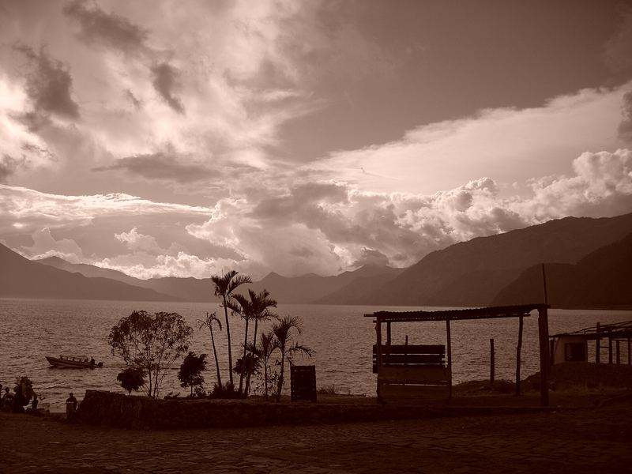
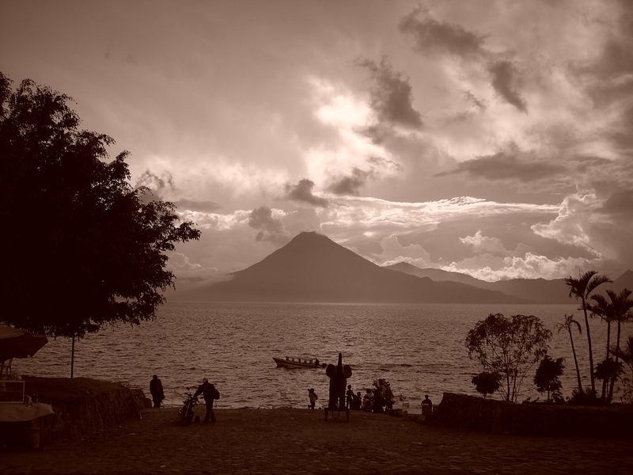

.jpg){kind=link}


Nuestro grupo de WhatsApp
La forma más fácil de conocer a la comunidad, hacer una pregunta o enterarte del próximo encuentro.
Únete a WhatsAppTres volcanes, pueblos mayas a la orilla y un grupo fuerte de personas que pagan, enseñan y reciben con Bitcoin.


El Lago de Atitlán llena una cuenca volcánica en el altiplano de Sololá, Guatemala. Los volcanes Atitlán, Tolimán y San Pedro se levantan en su orilla sur.
Los pueblos mayas están a la orilla del agua. El kaqchikel y el tz’utujil son los principales idiomas mayas que se hablan alrededor del lago, y cada pueblo tiene su propio carácter.
Panajachel es la entrada más concurrida. Desde sus muelles salen lanchas públicas hacia San Marcos La Laguna, San Pedro La Laguna, Santiago Atitlán y otros pueblos.
El pueblo se asigna según la posición de cada lugar en el mapa, por lo que es aproximado.


Más de 50 comercios de la red aceptan Bitcoin alrededor del Lago de Atitlán, desde cafés y hoteles hasta farmacias y lanchas.
117 lugares registrados en BTC Map / OpenStreetMap, datos del 2026-10-19.
Confirma siempre con el comercio: las formas de pago y los horarios cambian. Cada tarjeta muestra la fecha de la última verificación en OpenStreetMap, cuando existe.
En Panajachel hay registrados una lancha Bitcoin, un taxi acuático y tres tuc tucs. Los datos de contacto están copiados de los registros. Pregunta la tarifa antes de salir.
Lancha
Lancha
Tuc tuc
Tuc tuc
Tuc tuc
La forma más fácil de conocer a la comunidad, hacer una pregunta o enterarte del próximo encuentro.
Únete a WhatsAppNos reunimos en persona alrededor del lago.
Visitamos distintas escuelas y enseñamos Bitcoin.
Las escuelas se agregarán a la lista.
Una comunidad de personas que viven en el lago y creen en Bitcoin.
La biografía y la foto se agregarán.

Organizamos tours VIP por el lago para quienes quieren algo más que un mirador. Llegas como invitado y pasas tu tiempo con las personas que viven aquí.
Tiempo con las personas que viven y trabajan alrededor del lago.
Te integras a la cultura junto con las comunidades mayas del lago.
Incorporamos a comerciantes mayas a Bitcoin por medio de la educación, y trabajamos con cooperativas que aceptan Bitcoin.
Los datos para reservar se agregarán.

Hay un grupo de extranjeros que viven en el lago y los atendemos. Ayudamos a cualquier persona a integrarse a la comunidad Bitcoin de aquí, ya sea que estés de visita, pases una temporada o te quedes a vivir.
EscríbenosLa primera red de comercios con Bitcoin alrededor del lago la inició Bitcoin Lake (Lago Bitcoin), fundado por Patrick Melder en Panajachel en 2021 a partir de años de voluntariado en el Centro Educativo Josué. Somos una comunidad aparte e independiente, y este sitio no lo administra Bitcoin Lake.